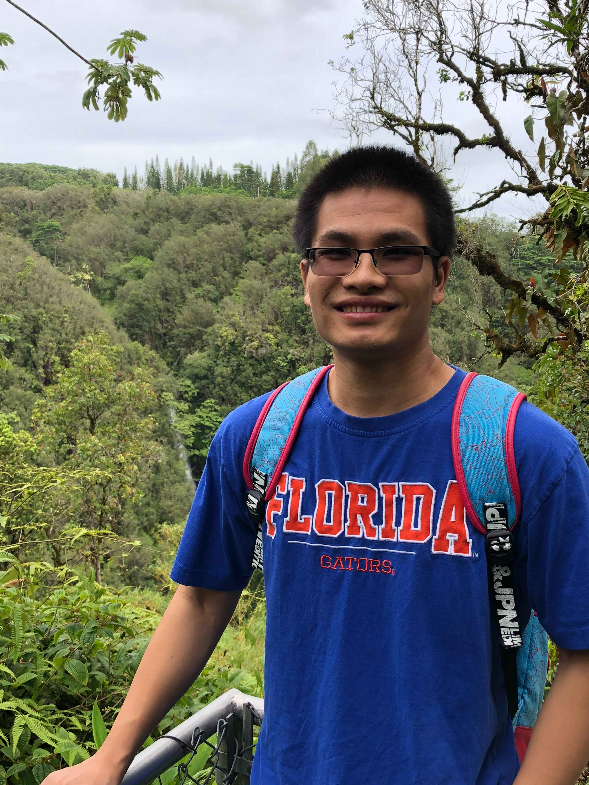

You Zhou (周游)
Ph.D
Department of Computer & Information of Science & Engineering
University of Florida
Address: 1170 Bordeaux Dr Building 3, Sunnyvale, CA 94089
Email: youzhou at cise dot ufl dot edu
Biography
I'm currently working on GCP network infrastructure for Google. My research spans broadly in Computer Networks. I am particularly interested in Big Data, Network Security and Privacy, Cyber-physical Systems, RFID and Internet of Things.
I received my PhD in Computer Science from University of Florida in 2017 under the supervision of Prof. Shigang Chen. I received my B.E. degree in Electronic Engineering from University of Science and Technology of China in 2013.News
- 2020/06: One RFID paper is accepted by IEEE/ACM Transactions on Networking.
- 2020/03: One traffic measurement paper is accepted by IEEE/ACM Transactions on Networking.
- 2020/03: One missing-tag detection paper is accepted by IEEE/ACM Transactions on Networking.
- 2019/11: One paper "Generalized Sketch Families for Network Traffic Measurement" is accepted by ACM SIGMETRICS'20.
- 2019/05: TPC member of IEEE INFOCOM'20.
- 2019/04: One cardinalitry measurement paper is accepted by IEEE/ACM Transactions on Networking.
- 2019/03: One paper "Threshold-Based Widespread Event Detection" is accepted by IEEE ICDCS'19.
- 2018/09: TPC member of IEEE ICDCS'19.